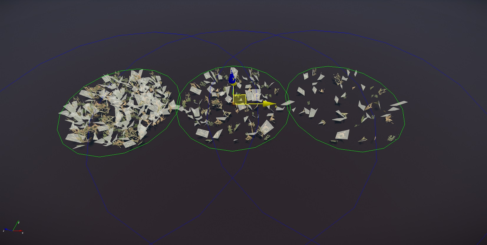
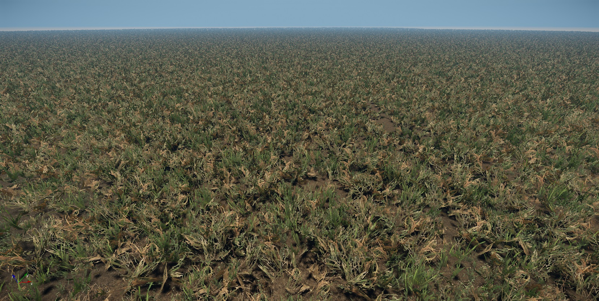
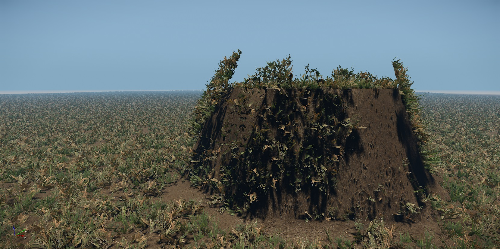

Обзор
Для начала мы начнем с базового участка травы. Когда мы объявляем ресурс травы патчем, мы на самом деле имеем в виду его как набор случайно повернутых плоскостей разных размеров, которые все запечены в один файл *.cgf. Идея этой настройки заключается в том, чтобы иметь один файл CGF, чтобы покрыть большую территорию (приблизительно 8 м), следовательно, чтобы заполнить область травой, вам нужно меньше экземпляров ресурсов растительности, чтобы полностью покрыть область.
Для получения дополнительной информации об использовании редактора растительности в CRYENGINE перейдите по ссылке HERE.

Рисунок 1: Пример трех моделей участков с травой: плотная, средняя и легкая вариация.

Рис. 2. Пример использования участков травы для заполнения территории растительностью.
Полезная информация
При работе над активом помните следующее:
- Обычно версия с участками травы и версия с объединенной сеткой не требуют физического прокси.
- Если вы включите трава в параметрах генерации шейдеров, то карта нормалей (оптимизация) вам не нужна.
- Каждый размещенный участок травы имеет свой собственный набор вызовов отрисовки. Объединенная сетка травы этого не делает — она объединяет куски вместе.
- Не превышайте диаметр 8 метров для больших участков травы. Этот размер доказал, что обеспечивает хороший баланс между производительностью и покрытием поверхности.
- Используйте минимальное количество полигонов при создании повторяющегося объекта, например травы. Это значительно улучшит производительность.
- Добавьте уровни детализации к активу. Уменьшите количество полигонов на 50% (если возможно) на каждом шаге LOD.
Ограничения травяных участков
Не может справиться с большими изменениями углов местности.
Участки травы хороши для большинства случаев использования, хотя есть несколько случаев, когда это не так. Поскольку участок занимает большую часть пространства (рекомендуется составлять примерно 8 метров), он по-прежнему считается плоской плоскостью. Следовательно, когда вы сталкиваетесь с изменениями рельефа (разные высоты), с некоторыми изменениями можно справиться, однако, когда встречаются крайние углы, он будет подстраиваться под перпендикуляр к местности. Поскольку заплата большая, это может привести к перетеканию в пустые места.
В примере ниже (Фото 3: Участок травы. ограничение), трава показана растущей под большим углом (нереалистичное состояние), что демонстрирует ограничения участка травы. В этом случае используйте объединенную сетку травы из-за ее меньшего размера.

Рис. 3: Ограничение на участок травы.
Не поддерживает технологию объединенной сетки (MM)
Из-за особенностей технологии Merged Mesh (MM) (которая требует очень простой настройки геометрии всего от 4 до 8 полигонов), когда геометрический макет, состоящий из нескольких плоскостей сетки, выровненных под случайными углами, становится слишком сложным, чтобы воспользоваться преимуществами этой технологии.
Учебники
В следующих разделах ниже описывается конвейер в зависимости от используемого вами инструмента DCC, а затем окончательная настройка CRYENGINE.